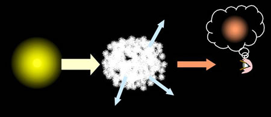

Interstellar extinction is the dimming of distant objects due to the presence of dust in the interstellar medium along the line of sight. First noticed by Robert Trumpler, who discovered that distant star clusters appeared dimmer than expected based on their distance alone, it occurs because the typical size of interstellar dust grains is comparable to the wavelength of blue light. The result is that blue light is either scattered or absorbed by the dust grains, effectively removing the shorter wavelengths from the light reaching us and making objects appear dimmer (extinction) and redder (interstellar reddening) than they really are.
As we move to longer wavelengths, the photons do not interact as strongly with the dust grains, and so provided the dust is not too thick, some fraction of the red light will make it through to our detectors. For this reason astronomers generally use infrared wavelengths to probe the dusty regions of our universe. The image to the left shows images of the dark nebula Barnard 68 taken at several different wavelengths in visible (top row) and infrared (bottom row) light. From this image we can clearly see that as we move to longer and redder wavelengths, more and more stars become visible from behind the dust cloud.
Since dust is located throughout our Galaxy, astronomers must always account for extinction when measuring the brightness of objects, particularly in optical light. Dust maps have been created for our Galaxy and the appropriate corrections must be applied to all photometric observations.